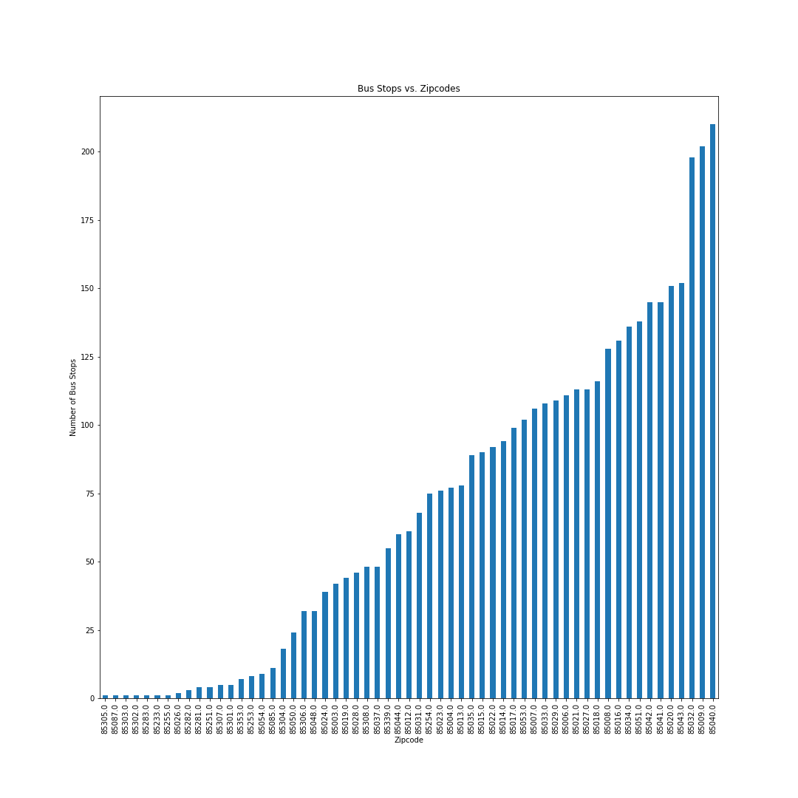

The Mission
With everyone being stuck at home due to the pandemic, we wanted to see the effects that it was having on public
transportaion in Arizona. After looking at the Valley Metro CSV's we decided that there were too many data points and
that we needed to narrow down our search. We agreed to look at only the cities where the lightrail was in order to do a
comparison of bus stops to rail stops which gave us three cities; Phoenix, Tempe and Mesa. Our mission was to find the
anwsers to the following questions for each of the three cities that we wanted to focus on, our questions were:
(1) How has COVID impacted bus/rail ridership?
(2) How does income and poverty affect public transit use?
(3) Are there obvious trends in ridership numbers and the poverty/income/population numbers of a given zipcode?
(4) What kind of effect does popluation have on ridership?
Our expectations are the ridership will be effected by the population in that higher zipcode populations will give us
a reuslt of more ridership. Lower income zipcodes will have more bus stops, and that there will be obvious trends in
ridership comparing weekdays to weekends. We also assume that COVID has drastically decreased the amount of ridership on
both bus stops and rail riding.

Zipcode vs. Bus Stops